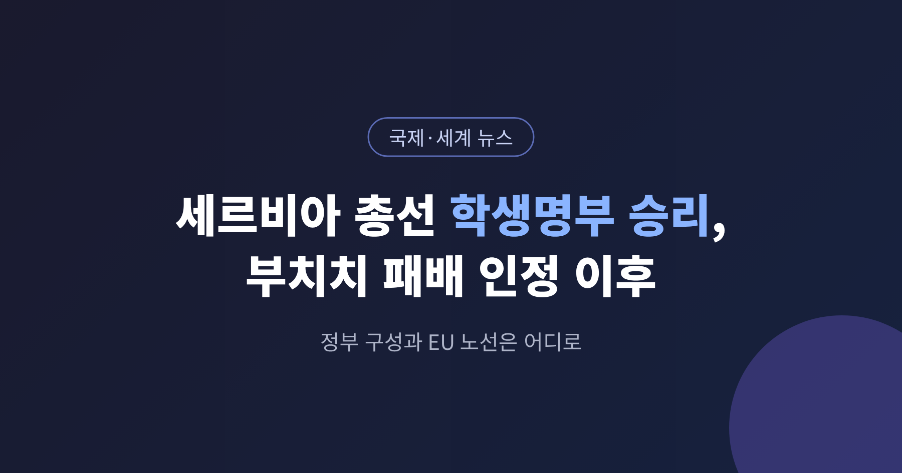
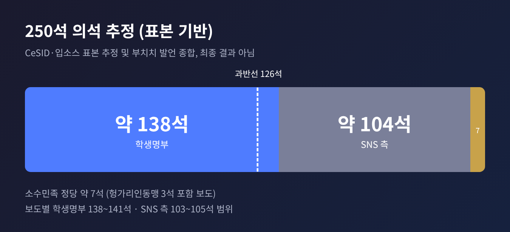
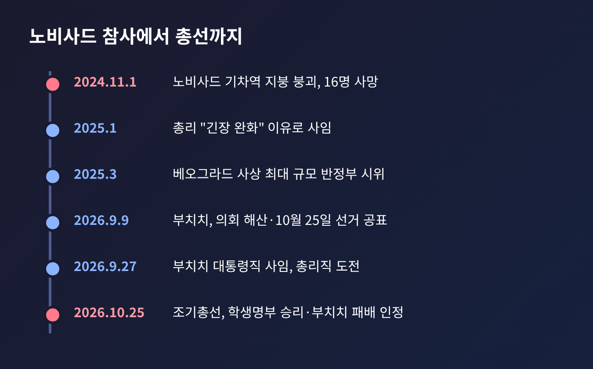
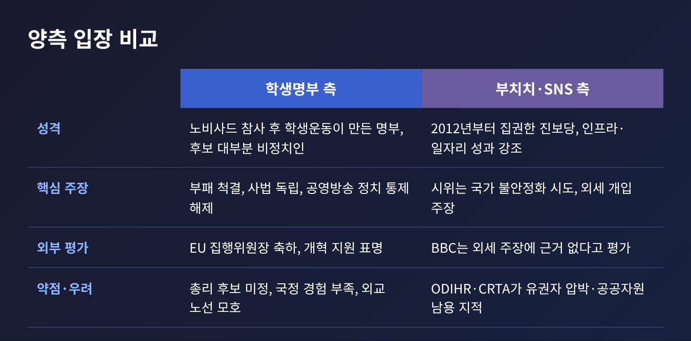
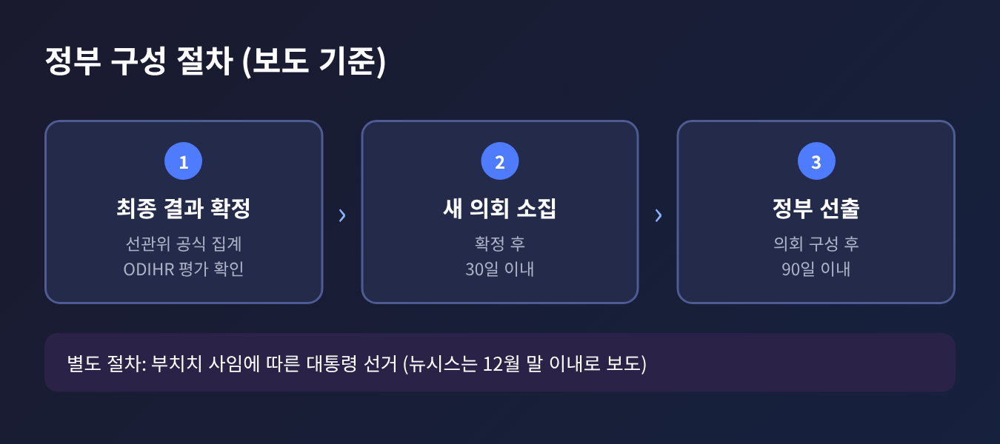
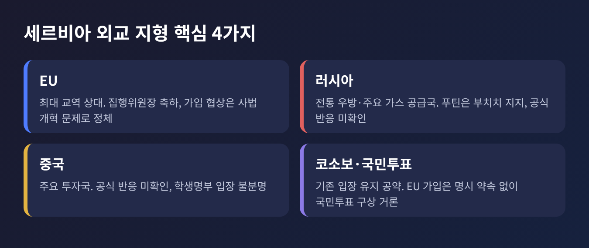

오늘은 10월 25일 치러진 세르비아 조기총선 결과와 그 이후를 정리해 보려 합니다.
학생운동에서 출발한 '학생명부'가 승리했고, 12년 넘게 권력을 쥐어 온 알렉산다르 부치치 측이 패배를 인정했습니다.
10월 23일 '박빙 쟁점', 25일 '개표 시나리오'에서 다룬 내용은 줄이고, 이번에는 결과의 의미와 앞으로의 과제에 집중하겠습니다.
3줄 요약
2026년 10월 25일(현지시간), 세르비아 국민은 250석 단원제 의회를 새로 뽑았습니다.
투표는 저녁 8시에 끝났고, 부치치는 약 90분 뒤 베오그라드의 선거본부 연설에서 패배를 인정했습니다.
그의 발언입니다. "우리가 이번 선거에서 졌다는 것이 분명하다."
근거는 확정 개표가 아니라 표본 집계였습니다.
부치치는 학생명부가 135~140석, 자신의 연합 '알렉산다르 부치치–통일 세르비아'가 약 105석을 얻을 것이라고 밝혔습니다.
득표는 학생명부 약 220만 표, 부치치 측 약 172만 표로 추산했습니다.
여론조사기관 CeSID와 입소스의 표본 추정은 이보다 조금 더 구체적입니다.
보도에 따르면 학생명부는 약 52%에 138~140석, 진보당(SNS) 측은 약 39%에 103~104석이었습니다.
의석 과반선은 126석입니다. 추정이 맞다면 학생명부는 연정 없이도 단독으로 정부를 꾸릴 수 있습니다.
나머지 약 7석은 소수민족 정당의 몫으로 전망되며, 그중 3석은 보이보디나 헝가리인동맹으로 보도됐습니다.

다만 소스마다 수치가 조금씩 다릅니다. 학생명부 득표율은 52.0%와 52.7%, 의석은 138석에서 141석까지 보도가 갈립니다.
모두 표본 추정이므로, 이 글에서는 '약'과 '보도에 따르면'으로 한정해 적습니다.
이번 결과가 무게를 갖는 이유는 세 가지입니다.
첫째, 부치치의 정치 이력이 일단 멈췄습니다.
그는 2012년 부총리로 집권 세력에 올랐고, 2014년 총리, 2017년 대통령을 지냈습니다.
국내 보도는 '12년', 일부 외신은 '14년' 집권으로 쓰는데, 시작 시점을 2012년으로 보느냐 2014년 총리 취임으로 보느냐의 차이입니다.
둘째, 투표율입니다.
선관위는 오후 6시 기준 64.9%를 발표했고, 마감 후 보도는 약 69~70%였습니다. 2023년 총선은 58.77%였습니다.
집계 주체에 따라 숫자가 다르다는 점은 감안해야 하지만, 방향은 분명합니다. 정부에 실망한 청년과 야권 지지자가 대거 투표장에 나왔다는 분석이 나옵니다.
셋째, 승리한 쪽이 기성 정당이 아니라는 점입니다.
정당 정치에 지친 유권자들이 학생이 만든 명부를 택했습니다.
유럽 곳곳의 청년 항의와 이어 해석하는 분석도 있습니다. CNN은 생활비와 주거비 부담에 항의하는 청년 시위가 유럽 여러 나라에서 이어지고 있어 파급이 있을 수 있다고 전했습니다.
출발점은 2024년 11월 1일입니다.
북부 도시 노비사드의 기차역 지붕이 무너져 16명이 숨졌습니다.
부실 공사와 부패 의혹이 제기됐고, 학생들이 진상 규명과 책임자 처벌을 요구하며 대학 봉쇄와 시위에 나섰습니다.
시위는 교사, 농민, 배우, 판사까지 번졌습니다.
2025년 1월에는 총리가 "긴장 완화"를 이유로 사임했고, 3월에는 베오그라드에서 세르비아 사상 최대 규모의 반정부 시위가 열렸습니다.
학생운동은 뚜렷한 지도자 없이 학생 총회와 평의회로 움직였습니다.

올해 9월 9일 부치치가 의회를 해산하고 10월 25일을 선거일로 정했습니다.
원래 일정은 2027년 말이었으니 1년 넘게 앞당긴 셈입니다.
9월 27일에는 대통령직을 내려놓고 총리직에 도전하겠다고 나섰습니다. 대통령직을 내려놓고, 의회 다수를 확보해 총리로 복귀한다는 계산이었습니다.
학생명부는 9월 14일 후보 명단을 냈습니다.
250명의 후보는 대부분 교수, 의사, 예술가, 농민 같은 비정치인이었고, 학생 지도부는 직접 후보로 나서지 않았습니다.
대표 후보는 노비사드 의대 심장내과 교수 일리야 스르다노비치입니다.
공약은 사법 독립, 부패 전담 수사조직, 공영방송의 정치 통제 해제, 국영기업 낙하산 인사 중단 등 11개 항으로 알려졌습니다.
균형을 위해 양쪽 입장을 함께 보겠습니다.

부치치와 SNS는 노비사드 참사 관련 의혹을 부인해 왔습니다.
시위대를 '봉쇄자'라 부르며 나라를 흔들려 한다고 비판했고, 패배 뒤에는 유럽 일부 국가와 미국의 '비선 권력'이 상대를 도왔다고 주장했습니다.
BBC는 이 주장에 근거가 없다고 평가했습니다. 반면 SNS 지지자들은 인프라 투자와 일자리를 성과로 내세웁니다.
공식 통계를 인용한 로이터 보도에 따르면 실업률이 26%에서 8~9%로 내려갔고, 2024년 외국인직접투자가 52억 유로로 사상 최대였다는 것이 있습니다.
학생명부 쪽에는 반대 방향의 우려가 있습니다.
보수 성향 '진정한 우파' 연합은 국가 노선이 불분명하다고 지적했고, 밀로시 요바노비치는 이를 책임 소재가 흐린 '실험'이라 불렀습니다.
총리 후보도 아직 발표되지 않았고, 정부 운영 경험이 부족하다는 평가가 나옵니다.
선거 공정성도 남은 문제입니다.
ODIHR(유럽안보협력기구 산하 민주제도인권사무소)은 7월 사전 평가에서 "고도로 양극화된 환경"을 언급했고, 10월 9일 중간보고서에서도 유권자 압박, 공공자원 남용, 미디어 규제기관의 독립성 같은 쟁점이 "해결되지 않았다"고 밝혔습니다.
투표 당일 시민단체 CRTA는 감시한 투표소 약 500곳 가운데 거의 3분의 1에서 유권자 압박이나 투표 비밀 침해를 관찰했습니다.
CeSID에는 오후 5시까지 약 260건의 잠재적 부정 신고가 들어왔습니다.
이는 신고 단계의 내용이며, 결과를 뒤집을 정도인지는 확인되지 않았습니다.
ODIHR의 선거 후 예비 평가는 10월 26일 발표 예정으로 알려졌으나, 이 글 작성 시점에는 그 내용을 확인하지 못했습니다.
보도에 따르면 절차는 이렇습니다.
최종 결과가 확정되면 새 의회가 30일 안에 소집됩니다. 의회가 구성된 뒤 90일 안에 정부를 선출해야 합니다.
그동안은 주로 마추트 총리의 관리내각이 맡습니다.

별도로 대통령 선거도 치러야 합니다. 부치치가 사임한 뒤 안나 브르나비치가 대통령 권한대행을 맡고 있습니다.
뉴시스는 12월 말 이내에 대선을 치러야 한다고 전했는데, 법적 근거는 제가 확인하지 못했습니다.
관건은 학생명부의 단일성입니다.
지도자 없이 움직이는 운동이 의회 정부를 이끌려면 총리와 내각을 정해야 합니다.
분석가들은 경찰과 정보기관, 부처에 포진한 부치치 측근의 교체가 이어질 수 있다고 봅니다.
부치치의 거취도 변수입니다.
보도에 따르면 그는 운동이 야당으로서 계속 활동할 것이라고 했고, 일부는 빠른 재기를 점쳤습니다.
현재 공식 직책은 없습니다. 의원직과 당 대표 지위는 확인되지 않았습니다.
외교 노선은 국내 의제보다 흐릿합니다.

EU는 빠르게 반응했습니다. 우르줄라 폰데어라이엔 집행위원장은 법치, 언론 자유, 반부패 개혁을 지원하고 세르비아의 EU 미래를 돕겠다고 밝혔습니다.
EU는 세르비아의 최대 교역 상대이기도 합니다. 다만 가입 협상은 사법 개혁과 대러시아 관계 문제로 정체돼 있습니다.
러시아는 세르비아의 전통적 우방이자 주요 천연가스 공급국이고, 푸틴 대통령은 부치치를 지지해 왔습니다.
중국은 주요 투자국입니다. 두 나라의 공식 반응은 현재까지 확인되지 않았습니다.
학생명부는 러시아와의 전통적 관계와 코소보 입장을 유지하겠다고 했고, EU 가입을 명시적으로 약속하지는 않았습니다. 유럽통합 국민투표 구상이 거론됐을 뿐입니다.
정리하면 서방은 기대를, 모스크바와 베이징은 불확실성을 안게 됐습니다.
다만 학생명부가 곧바로 친서방으로 기운다고 단정하기는 이릅니다. 지금까지의 신호는 국내 개혁에 무게가 실려 있습니다.
마지막으로 한 가지만 덧붙이겠습니다.
이번 결과는 표본 추정에 기댄 것이어서, 최종 확정 수치와 ODIHR 평가를 확인한 뒤에야 온전히 해석할 수 있습니다.
그래도 분명한 사실이 하나 있습니다. 거리에서 시작한 요구가 투표소의 다수가 되었다는 점입니다.
"저항은 이겼고, 이제 통치가 시험받는다."
승리를 축하하는 일은 하루면 끝나지만, 약속을 지키는 일은 그보다 훨씬 길게 이어질 것입니다.
출처: 뉴시스·경향신문·머니투데이(2026.10.26), Euronews(10.25), ABC News(10.26), Al Jazeera(10.25~26), N1(ODIHR 보고, 7.31·10.10) 등. 수치는 표본 추정이며 최종 결과와 다를 수 있습니다.